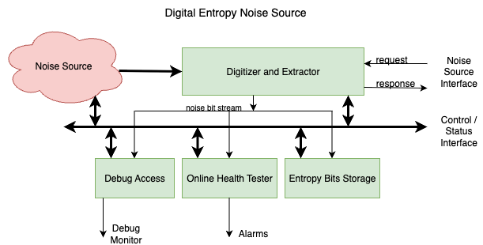

1. Entropy Source
The detailed specification for the entropy source is linked here. The summary is included here for convenience.
The entropy source component is a random number generator which is based on multiple asynchronous ring oscillators sampled in such a way to generate random bits from the jitter noise and metastable latching behavior. It forms the basis of a True Random Number Generator (TRNG).
The generated stream is ``raw'' noise in the sense that there may still be some statistical biases present which need to be filtered out by an optional entropy conditioner post processing unit which would consume the output noise bits. NIST specifies a set of acceptable conditioners. Common conditioners are based on standard hash functions such as SHA256 and ASCON as well as standard keyed hash functions such as AES-CMAC and HMAC.
The goal of this test component is to assess the statistical properties of the raw entropy source, so we will not add a conditioner here.

The diagram below shows the entropy source component which implements the above concept. The client controls the component via the APB bus interface which provides access to a set of memory mapped configuration and status registers (CSRs) described later in this document. The raw entropy stream is connected to the (optional) downstream conditioning unit mentioned above as well as the health statistics tester, debug monitor and entropy bits storage.
The entropy source is designed according to guidelines set forth in the NIST SP800-90B specification and is planned to be ready for FIPS 140-2 and 140-3 certification. It will also be compliant with AIS31 statistical requirements specified by the BSI agency.
Noise Generation
The entropy source uses 12 independent ring oscillators as its noise source. Each ring oscillator is constructed from manually instantiated generic logic cells (gnand2, gbuff, gmux2) to prevent synthesis optimization from disrupting the asynchronous feedback loop. Each oscillator has two configurable lengths: a TOTAL_LENGTH and a TAPPED_LENGTH, where a multiplexer selects between the short and long feedback paths. The entropy_rosc_tune_fsm toggles between these two lengths on a rising edge of any health test failure, providing a rudimentary frequency detuning mechanism.
The oscillator output is sampled by a metastable D flip-flop (gdff) clocked by a sampling clock. The sampled bit is then synchronized to the system clock domain through a two-stage synchronizer. Each lane can be clocked either by an external sampling clock (rosc_sample_clk_i) or by a shared internal ring oscillator (total length 109, tapped length 53). A per-lane ripple divider provides division ratios of 1, 2, 4, 8, 16, and 32, selected through the CSR.
Decorrelation and BIW Mixing
Each sampled noise bit enters a serial decorrelator (entropy_decorrelator), which shifts bits through a 29-stage shift register with XOR feedback. A downsample counter derived from the sample_clk_div CSR field determines how frequently the top 8 bits of the shift register are latched and emitted as an entropy byte. A per-byte mask allows individual bit lanes to be disabled. The decorrelator can be bypassed through a CSR control bit, in which case raw noise bits pass directly to the output.
The 12 decorrelated byte streams are combined by the Balanced Iterative Whirlpool (BIW) stage, which uses four gf_muladd instances performing y = a*b + c in GF(2^8) with the AES field polynomial (0x1B). The 12 input bytes are grouped into three sets of four and reduced to a single 32-bit word. This mixing step improves the statistical independence of the output without introducing significant latency.
Health Testing
Health tests operate at two levels. Each of the 12 entropy_generator instances runs an 8-bit entropy_health_test on its individual decorrelated output. At the top level, a second 32-bit entropy_health_test instance monitors the post-BIW (or post-bypass) stream.
The health test wrapper instantiates three OpenTitan-derived test modules. The repetition count test (entropy_src_repcnt_ht) tracks consecutive identical values per bit lane and flags when a threshold is exceeded. The adaptive proportion test (entropy_src_adaptp_ht) accumulates per-bit ones counts within a configurable window and compares against high thresholds. The Markov test (entropy_src_markov_ht) counts bit-pair transitions and compares to high and low thresholds at window boundaries. Window synchronization is driven by a prim_count counter in the entropy_generator_complex.
Health test thresholds, enable bits, and window sizes are all programmable through the CSR interface. Test status is reported as an 8-bit vector where bit 0 indicates a repetition count failure, bit 3 an adaptive proportion failure, and bits 4-5 Markov high/low failures.
SHA-256 Whitening
When the SHA-256 whitener is enabled via the CSR, the 32-bit BIW output stream feeds into the entropy_sha256_whitener module. This module accumulates 16 consecutive 32-bit words (one SHA-256 block of 512 bits), computes the SHA-256 digest using the OpenTitan prim_sha2_32 primitive, and emits the 8-word (256-bit) digest. The compression ratio is 2:1 (16 input words produce 8 output words). When the whitener is disabled, the BIW output passes through to the FIFO without modification.
Output FIFO
The conditioned entropy stream is stored in a 64-entry FIFO (entropy_fifo). Each entry is 36 bits wide: 32 data bits plus 4 byte-wise odd parity bits. The FIFO includes pointer integrity checking (normal and inverted pointer pairs with mismatch detection) and parity verification on reads. An optional churn mode XORs the incoming data with a word read from the diametrically opposite FIFO position, improving entropy distribution. Overflow, underflow, parity error, and pointer error conditions are all reported to the CSR block and can trigger interrupts.
The FIFO output drives the entropy_stream_data_o and entropy_stream_vld_o top-level ports. These connect to the DRBG ingress path and to the distribution network for entropy consumers such as cryptographic accelerators.